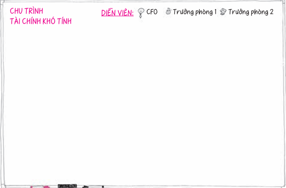
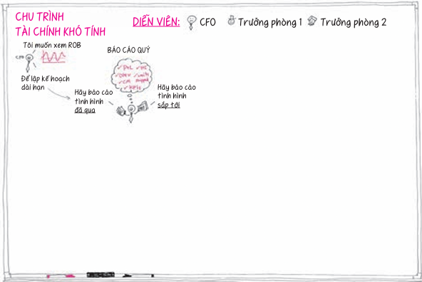
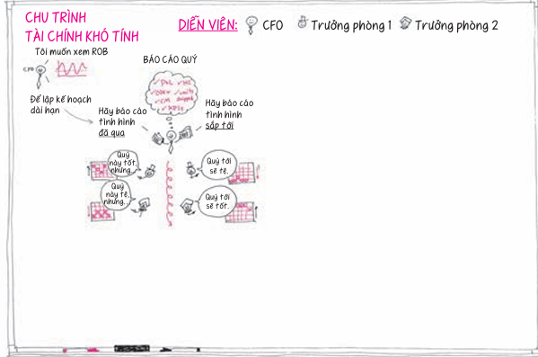
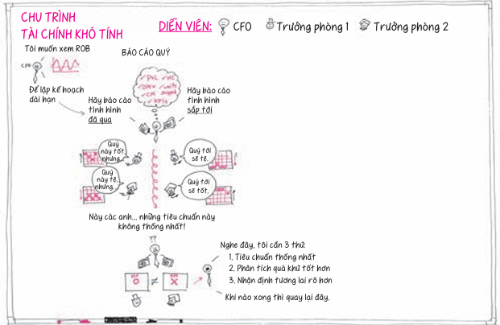

Chương 5: Ngày 4 - Trình bày
Hôm nay, chúng ta sẽ kết hợp tất cả những ý tưởng này với nhau khi kết thúc quy trình tư duy bằng hình ảnh: hôm nay, chúng ta sẽ trình bày.

Tôi sẽ bắt đầu ngày hôm nay bằng một câu chuyện vừa-diễn-vừa-kể – câu chuyện này đưa chúng ta trở lại với Microsoft. Năm ngoái, Microsoft yêu cầu tôi và đồng nghiệp là Chelsea đến giúp làm rõ một vấn đề trong việc mô phỏng dữ liệu.
Nhóm tài chính này yêu cầu chúng tôi đến Redmond, Washington để giúp họ nghĩ cách khiến cho những thông tin tài chính được tạo ra bên trong các bảng tính trở nên dễ nhận biết, và xem liệu có phương cách hình ảnh nào khiến cho việc phân tích dữ liệu trở nên nhanh chóng và mang tính trực giác hơn.

Chúng tôi vẽ các hình tròn đầu tiên và đặt tên: "CFO", "Trưởng phòng 1", "Trưởng phòng 2". Sau đó, chúng tôi vẽ chân dung của họ.

Hàng quý, Giám đốc tài chính đều muốn xem báo cáo nhịp độ kinh doanh; ông ấy muốn xem các con số.

Trưởng phòng 1 báo cáo quý trước tuyệt vời nhưng quý sau tồi tệ. Trưởng phòng 2 báo cáo ngược lại.

Giám đốc tài chính thấy rằng hai trưởng phòng đang báo cáo theo hai tiêu chuẩn khác nhau. Ông ấy yêu cầu cả hai trở lại khi tiêu chuẩn đo lường của họ đồng nhất.

Không biết chắc nên sử dụng tiêu chuẩn đánh giá nào, hai trưởng phòng chọn cách báo cáo tất cả những gì mà các nhà phân tích thu thập được, và quy trình lại bắt đầu từ đầu.